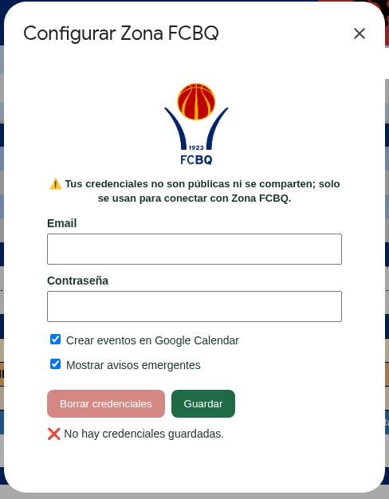
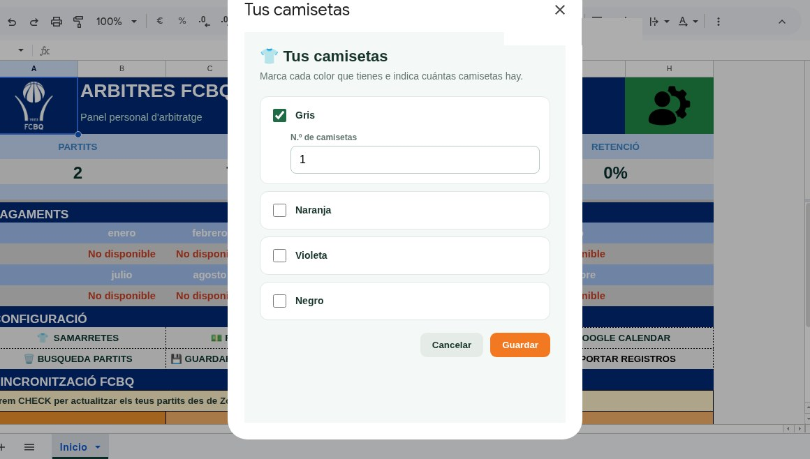
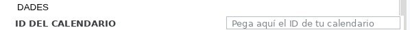
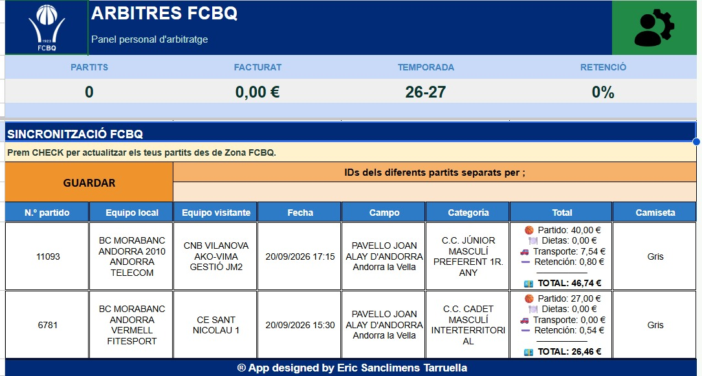

01
01
Abre ACCESO FCBQ
En la pestaña Inicio, pulsa el botón rojo de la parte superior derecha (marcado en la imagen).
Guía de uso
Crea tu copia de App Arbitres FCBQ, conecta tu acceso y mantén tus designaciones sincronizadas con Google Calendar.
La app consulta ZonaFCBQ, pero no escribe ni modifica datos allí.
Paso 1
El enlace abre la vista del Template en Google Sheets para que puedas crear tu propia copia sin editar el original.
Pulsa el botón para abrir la vista oficial del Template en Google Sheets.
Google guardará una copia propia en tu Drive. Puedes cambiarle el nombre antes de crearla.
Trabaja siempre desde esa hoja. Tus registros y tu configuración quedan en tu copia.
Paso 2
Haz esta configuración una vez en tu copia. Los datos de acceso se guardan de forma privada para tu usuario.
01
En la pestaña Inicio, pulsa el botón rojo de la parte superior derecha (marcado en la imagen).

02Usa el mismo correo y contraseña con los que accedes a ZonaFCBQ. No los escribas en celdas de la hoja.
 03
03
Guarda la configuración. Si el botón de Inicio se pone verde, el acceso está listo.
Paso 3
CHECK busca cambios, prepara los partidos y mantiene el calendario al día.
Indica los colores y cantidades disponibles. Si pulsas CHECK sin camisetas, la app abrirá esa configuración para que puedas completarla.

En Google Calendar → Configuración e integración → Integrar calendario, copia el campo ID del calendario y pégalo en la configuración de la app.

La app consulta tus designaciones, detecta novedades y prepara los partidos encontrados para que puedas revisarlos.

Al guardar, los registros se añaden a tu hoja y los eventos se crean o actualizan en Google Calendar cuando esa opción está activada.
Listo para empezar
Antes de empezar
Lo más importante sobre el uso de la app.
Tu usuario y contraseña de ZonaFCBQ se guardan de forma privada en tu propia copia y solo se usan para consultar tus designaciones. No se comparten con terceros ni se utilizan para ningún fin distinto del explicado. Además, la app no escribe, modifica ni borra datos en ZonaFCBQ.
Sí. Puedes utilizarla para tus designaciones como auxiliar de mesa y también si ejerces de árbitro y auxiliar de mesa: la app distingue ambas funciones para que cada partido quede registrado correctamente.
La sincronización automática funciona únicamente con Google Calendar.
No. El funcionamiento se mantiene y se actualiza automáticamente. Tu hoja conserva sus datos mientras recibe las mejoras de la app.